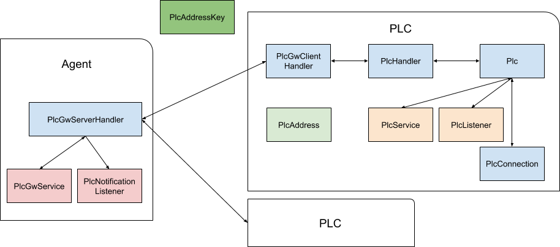
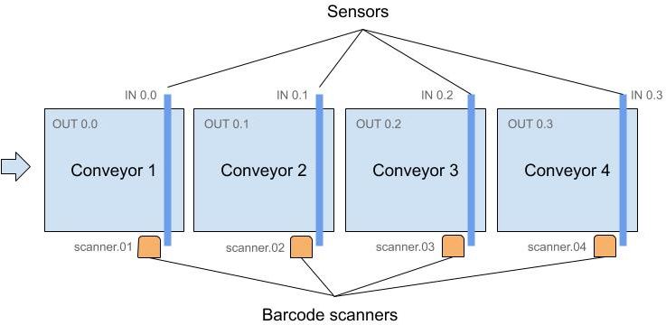

Overview
Using Strolch as a PLC has certain advantages and disadvantages. The following is a list of advantages:
- Same programming model and language for server and PLC
- PLC has the same privilege handling as in Strolch
- Simulating down to the PLC level is easily possible for easier testing of server logic
Of course using the Java language as a PLC has its limitations, we have manage to use it for customers and are satisfied with the result. What follows is a description in how to set up your own Strolch based PLC.
Architecture
The Strolch PLC architecture sees the Strolch Agent as the server, managing logical devices, i.e. multiple sensors and actors together and thus deciding
Example set up
This example setup describes the movement of containers over conveyors. The conveyors have motors which can be started and stopped by a GPIO output pin controlled on a Raspberry Pi and each conveyor has a light barrier to detect the occupancy of a container and the Raspberry Pi detects this on GPIO input pins.
Further at each conveyor location is a barcode reader to read the ID of a container.
The general idea is that the PLC notifies a Strolch agent of changes, and only turns conveyors on, when the agent gives the command. Thus the agent handles business logic and the PLC controls the I/Os.
